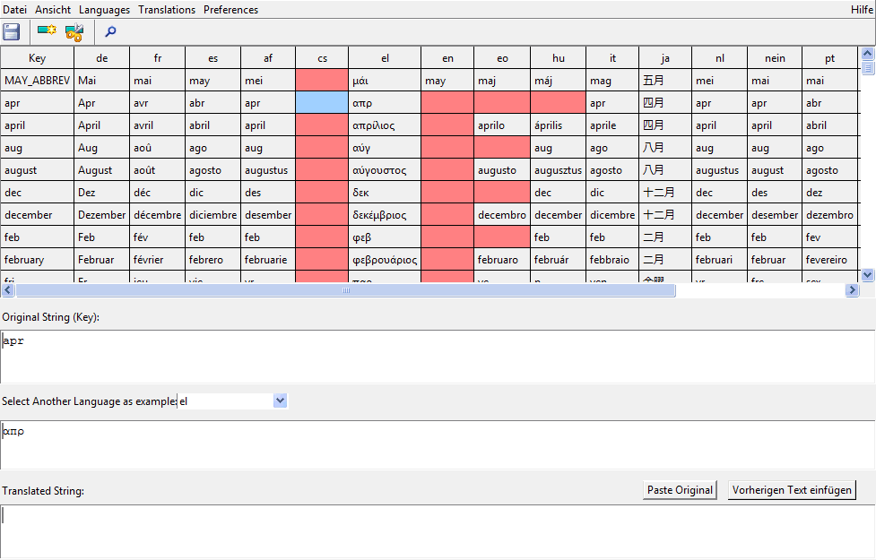

![[up]](../../../icons/DocsUpArrow.gif)
![[next]](../../../icons/DocsRightArrow.gif) This tools offers a convenient way to edit Smalltalk/X's language translation files
(aka "resource-files").
This tools offers a convenient way to edit Smalltalk/X's language translation files
(aka "resource-files").
A translation editor can be either started via the
Launcher,
or by evaluating the Smalltalk expression:
Tools::InternationalLanguageTranslationEditor open
Immediately after startup, the window looks like:

It consists of 4 main subviews plus a menu panel.
These components are:
- Toolbar Menu
Provides buttons for the most frequently used (menu-) functions.
- Language Table
shows multiple target language translations for a given language key.
The menu allows both for additional columns and the language per column to be selected.
Entries with missing translations are shown in red.
- Key Field
enter a key string here. In most cases, the english text is used here.
- Example Language Field
displays an extra example language for reference.
- Target Language Field
enter a target language string here.
[...unfinished document...]
Next: The Translation Scheme in Smalltalk/X
![[stx logo]](../../../icons/stx.gif) Copyright © 2008 eXept Software AG, all rights reserved
Copyright © 2008 eXept Software AG, all rights reserved
Doc $Revision: 1.4 $ $Date: 2016-09-14 09:41:13 $